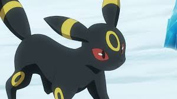
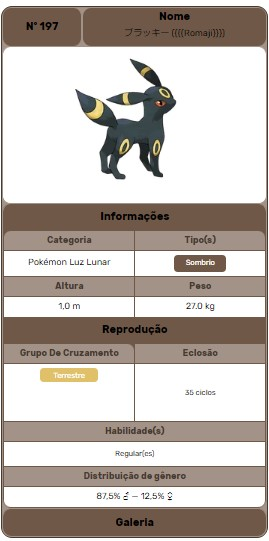

Umbreon, o noturno
Umbreon (em Japonês: ブラッキー Blacky) e um Pokémon do tipo Noturno introduzido na Segunda geração. é uma das evoluções posiveis do Eevee.
Este Pokémon tem toda a sua pele negra, com exceção de círculos amarelos em seu corpo, que podem ser iluminados a vontade. Ele se parece com uma raposa negra, com olhos vermelhos, e brilhantes no escuro.
Diferenças de Genero
Não ha diferenças de genero no Umbreon
Umbreon de Gary Este é o Eevee de Gary, que na região de Johto evoluiu em Umbreon. Ash o encontram enquanto lutava contra um treinador e seu Alakazam. Irmãs de Sakura: Umbreon é um dos Pokémon das irmãs de Sakura, que vivem na Cidade de Ecruteak na Casa de Cerimonias.
